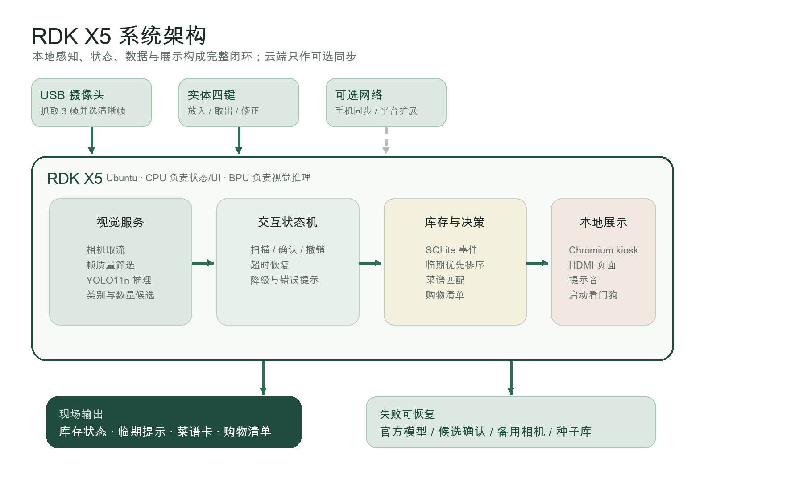
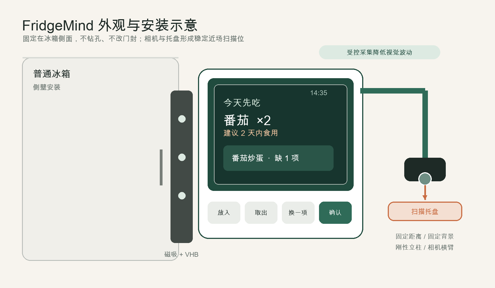

已实现 vs 计划功能
评审关心的不是概念有多漂亮，而是哪些现在能跑、哪些是现场目标。这里明确区分，不把计划写成已完成。
现已实现（软件原型）
- 库存状态机：入库 / 取出 / 撤销 / 零库存钳制 / 临期追踪
- 库存引擎 6 / 6 单元测试通过，构建通过
- 本地轻量目标检测模型（SSDLite MobileNet）接入
- 检测站交互原型：扫描位 + 确认键 + 库存面板
- 产品方案、竞品研究、架构与一页说明
48 小时现场目标
- RDK 真机：摄像头取流、门磁事件、称重信号接入
- 变化区域判定 + 候选识别 + 用户一键确认闭环
- 临期提醒 + 基于库存的菜谱推荐
- 磁吸外壳 / 支架与实体按键集成
- 端到端演示 + 断网 / 遮挡 / 误识别降级测试
食材存取感知闭环
核心创新不是“AI 管理冰箱”，而是设备如何知道食材被放入、取出，并把人从逐件扫码中解放出来。
组合感知 + 人机共同确认：低置信度时进入候选，用户一次确认或换项，不让错误结果直接污染库存。
说明：本地检测模型已在浏览器原型中加载并输出候选，食材识别准确率尚未在 RDK 实机验证。
RDK 系统架构（四层）
RDK X5 承担本地感知、识别、库存与交互；手机仅作同网查看，断网后主链路仍可用。
硬件结构与磁吸安装
磁吸是产品形态而非技术核心；技术核心是“事件 + 视觉 + 重量”的组合感知，以及人机共同确认。


交互 Demo 与本人贡献
交互 Demo 为桌面验证原型：打开后可用摄像头扫描位识别候选、按确认键更新库存；模型在浏览器本地加载。
打开交互 Demo 返回作品集首页本人贡献
- 用户痛点分析、竞品研究、产品定位与功能架构
- 感知闭环与交互方案设计（门磁 + 摄像头 + 称重 + 确认）
- 库存状态机规则与验收标准、原型推进
- 展示材料与演示方案